조경기사 (2011-06-12 기출문제)
1과목: 조경사
1. 덕수궁 석조전 앞의 분수와 연못을 중심으로 한 정원의 양식은?
- 독일의 풍경식
- 프랑스의 정형식
- 영국의 절충식
- 이탈리아의 노단건축식
(정답률: 83%)

2. 도산서당 마당 동쪽 한구석의 못에 연(蓮)을 심고 정우당이라고 한 것은 중국 진시대에 무엇에 영향을 받았는가?
- 주렴계(周濂溪)의 애련설
- 왕희지(王羲之)의 난정고사
- 도연명(陶淵明)의 귀거래사
- 중장통(仲長統)의 락지론
(정답률: 76%)
3. 범세계적인 뉴타운 건설 붐을 일으켰고 새로운 도시공간을 창조하는데 조경가의 적극적인 참여계기가 된 것은?
- 도시미화운동
- 시카고 대박람회
- 전원도시론
- 그린스워드(Green sward)안
(정답률: 53%)
4. 다음의 정원 가운데 방지원도형의 지당이 있는 곳은?
- 청평사 문수원 영지
- 창덕궁 부용지
- 경복궁 경회루 원지
- 창덕궁 애련지
(정답률: 73%)
5. 다음 중 우리나라 최초의 공원으로 맞는 것은?
- 남산공원
- 장충단공원
- 사직공원
- 파고다공원
(정답률: 83%)
6. 조선 숙종 때 문신인 우암 송시열이 지은 별서로 곡지원도형의 연못이 있는 곳은?
- 동춘당
- 암서제
- 풍암정사
- 남간정사
(정답률: 86%)
7. 통경선 정원(Vista Garden)을 주로 설계한 조경가는?
- William Kent
- William Robinson
- Andr' Notre
- John Vanbrugh
(정답률: 79%)
8. 다음 [보기]에서 설명하는 정원으로 맞는 것은?
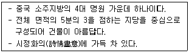
- 졸정원
- 유원
- 사자림
- 창랑정
(정답률: 77%)
9. 일본 선사상(仙思想)의 정원에 대한 설명이 틀린 것은?
- 실정(室町, 무로마치) 시대에 강한 영향을 미쳤다.
- 사실주의에 입각하여 경관을 조성한다.
- 대선원서원(大仙院書院) 정원이 있다.
- 고산수수법(枯山水手法)이다.
(정답률: 72%)
10. 전통정원에서의 「석탑(石榻)」과 유사한 형태의 오늘날 현대 조경 시설물은?
- 파골라
- 벤치
- 음수대
- 전망대
(정답률: 55%)
11. 조선 태종 때에 설치된 오늘날의 이정표 역할을 한 것의 명칭은?
- 후자(喉子)
- 지표(地表)
- 돈대(墩臺)
- 물보(物譜)
(정답률: 48%)
12. 다음 조경가(造景家)와 그들이 설계한 중요한 작품의 연결이 옳지 않는 것은?
- 윌리엄 켄트－햄프턴 코트
- 앙드레 르 노트르－베르사이유 궁전
- 옴스테드－센트럴 파크
- 베르니니－포폴로 광장
(정답률: 63%)
13. 조성시기가 빠른 것부터 순서대로 옳게 나열된 것은?
- 영양 서석지 → 대전 남간정사 → 강진 다산초당 → 서울 부암정
- 영양 서석지 → 강진 다산초당 → 대전 남간정사 → 서울 부암정
- 대전 남간정사 → 영양 서석지 → 강진 다산초당 → 서울 부암정
- 대전 남간정사 → 강진 다산초당 → 영양 서석지 → 서울 부암정
(정답률: 61%)
14. 조선시대에는 풍수지리설 및 음양오행사상 등이 정원수의 선정에도 영향을 미쳤다고 볼 수 있다. 당시 주택정원의 장소에 따른 수종 선택이 적합하지 않은 것은?
- 문 앞－회화나무
- 중정(中庭)－화초류
- 전정(前庭)－오동나무
- 울타리 옆－국화
(정답률: 63%)
15. 18세기부터 19세기에 걸쳐 사실주의 풍경식 정원양식이 주도적으로 펼쳐진 국가는?
- 영국
- 독일
- 프랑스
- 미국
(정답률: 78%)
16. 다음 중 바빌론의 공중정원에 대한 설명으로 옳지 않은 것은?
- 세계 7대 불가사의 가운데 하나이다.
- 네브카드네자르 2세가 왕비를 위하여 축조하였다.
- Hanhing garden 또는 가공원(架空圓)이라 한다.
- 하늘에 매달아 조성하였다.
(정답률: 93%)
17. 16세기 페르시아 압바스(Abbas)왕이 이스파한(Isfahan)에 만든 왕의 광장이라 불리는 옥외 공간은?
- 차하르 바그(Chahar-bagh)
- 마이단(Maidan)
- 40주궁(Cheher Sutun)
- 아샤발 바그(Achabal-bagh)
(정답률: 78%)
18. 다음 궁성 중 외성, 중성, 내성, 북성으로 된 것은?
- 신라의 반월성
- 백제의 사비궁
- 고구려의 장안성
- 고려 만월대 궁원
(정답률: 72%)
19. 헤이안시대 침전조(寢殿造)정원에 대한 설명 중 틀린 것은?
- 왕족을 중심으로 한 사교장소였다.
- 연못에는 홍교나 평교를 설치하였다.
- 침전조의 원형은 평등원이다.
- 조전(釣殿)은 뱃놀이를 위한 승ㆍ하선(乘ㆍ下船) 장소로 이용되기도 하였다.
(정답률: 62%)
20. 다음의 그림은 이탈리아 노단건축양식(Terracedominant architectural style)의 3대 평면유형가운데 하나이다. 이유형의 이름과 여기에 해당하는 별장의 이름은?
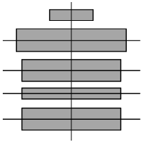
- 직렬형－랑테장
- 병렬형－에스테장
- 직교형－메디치장
- 교차형－이졸라벨라
(정답률: 60%)
2과목: 조경계획
21. 시설면적 15000m2의 문화 및 집회시설이 상업지역에 있다. 주차장법 시행령에 명시된 주차대수 기준을 적용하면 부설 주차장에 설치하여야 하는 최소 주차대수는?
- 50대
- 75대
- 100대
- 150대
(정답률: 40%)
22. 다음 중 공장조경 계획의 원칙에 가장 위배되는 것은?
- 종업원을 위한 휴양 및 휴게공간, 운동공간, 위락공간의 필요성은 크지 않다.
- 동선 배치는 기능적이며 효율적이어야 하고, 폭원은 장래성을 감안하여 충분히 잡는다.
- 공장 구내(構內) 녹지조성시 북측에 방풍, 방화, 방사용 식수대를 조성한다.
- 공장 부지 내 토양이 부적당한 경우에는 밭흙을 객토하여 후일의 식물생육에 대비한다.
(정답률: 80%)
23. 조경이 갖는 특징을 건축, 토목, 도시계획, 도시설계와 비교한 설명 중 틀린 것은?
- 건축에 비해 조경은 외부공간을 주된 대상으로 한다.
- 토목이나 도시계획에 비교하면 조경은 미적인 측면을 강조한다.
- 도시설계에 비교하면 조경은 최종 모습이 존재하기 위한 틀을 제공한다.
- 다른 분야와는 달리, 자연의 보전과 활용에 관심을 갖는다.
(정답률: 72%)
24. 마리나(marina)에 대한 설명으로 옳은 것은?
- 위락용 보트의 보관시설과 기타 서비스 시설을 갖춘 일종의 정박시설이다.
- 2차 대전 후 유럽에서 시작된 군사시설이다.
- 항구의 물품을 하역하기 위한 항만시설이다.
- 미국의 해안에 발달한 본격적인 해수욕시설이다.
(정답률: 76%)
25. 다음 [보기]의 설명은 무엇인가?
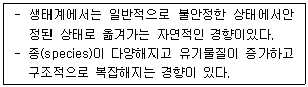
- Ecological structure
- Ecological succession
- Stable ecosystem
- Ecological climax
(정답률: 63%)
26. 어의 구별척도(Semantic Differential Scale)에 대한 설명으로 틀린 것은?
- 양극으로 표현되는 형용사의 목록으로 항목들이 구성 된다.
- 제한응답설문에서 사용되고 있는 척도법이다.
- 태도를 관찰하는 척도법의 한가지이다.
- 제시된 사물이 응답자에게 어떠한 의미를 지니고 있는지를 선택하게 한다.
(정답률: 60%)
27. 인간행태 관찰방법 중 시간차 촬영(Time-Lapse Camera)에 이용될 수 있는 가장 적절한 조사 내용은?
- 광장 이용자의 하루 중 보행통로 및 머무는 장소 조사
- 국립공원의 보행패턴 및 이용 장소 조사
- 대규모 아파트단지의 자동차 통행패턴 조사
- 초등학교 아동이 집에서부터 학교에 도달하는 보행통로 조사
(정답률: 76%)
28. 다음 중 도서관리계획에 관한 지형도면의 작성 방법에 대한 설명으로 옳지 않은 것은? (단, 국토의 계획 및 이용에 관한 법률 시행령을 적용한다.)
- 산업단지조성사업이 완료된 구역인 경우 지적도 사본에 도시 관리계획사항을 명시한 도면으로 지형도면에 갈음 할 수 있다.
- 도면을 작성하는 경우 지적이 표시된 지형도의 데이터베이스가 구축되어 있는 경우에는 이를 사용할 수 있다.
- 도면이 2매 이상인 경우에는 축척 5천분의 1내지 5만분의 1의 총괄도를 따로 첨부할 수 있다.
- 녹지지역 안의 임야에 대해서는 축척 500분의 1내지 1천 500분의 1의 지적도에 지형도면을 작성하여야 한다.
(정답률: 51%)
29. 홀(Hall)은 대인관계의 거리를 4종류로 구분하였다. 다음 중 종류와 거리와의 관계가 틀린 것은?
- 친밀한 거리 : 0∼1.5피트(약 0∼45cm)
- 개인적 거리 : 1.5∼4피트(약 45cm∼1.2m)
- 사회적 거리 : 4∼12피트(약 1.2m∼3.6m)
- 공유 거리 : 12∼14피트(약 3.6m∼4.2m)
(정답률: 81%)
30. 다음 [보기]에서 설명하는 내용으로 적합한 것은?
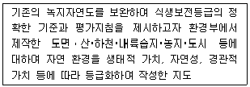
- 생태자연도
- 녹지구분도
- 식생분포도
- 경관가치도
(정답률: 67%)
31. 다음 정규 골프 코스의 계획 설계에 관한 설명으로 틀린 것은?
- 일반적으로 18홀을 기준으로 해서 최소 10ha정도의 면적은 있어야 한다.
- 각 골프코스의 길이를 합한 총길이는 18홀인 골프장은 6000미터를 기준으로 하며, 지형에 따라 총길이의 25% 범위 내에서 증감할 수있다.
- 산악지에서는 롱홀을 먼저 배치해야 전체 배치가 쉽고, 평탄지에서는 숏 홀을 먼저 배치해야 숏 홀의 특성을 살린 배치가 가능하다.
- 페어웨이의 폭은 티에서부터의 위치에 따라서 또 자연과의 조화 및 홀의 성격에 따라서 다소 달라지며, 최소 20m 정도에서 30∼60m 정도가 일반적이다.
(정답률: 47%)
32. Kevin Lynch의 도시이미지 구성요소가 아닌것은?
- 결절점(node)
- 랜드마크(landmark)
- 통로(path)
- 건물(building)
(정답률: 80%)
33. 환경설계에서 연속적 경험의 중요성에 대한 연구와 관련이 없는 사람은?
- 할프린(Halprin)
- 틸(Thiel)
- 맥하그(Mcharg)
- 아버나티(Abernathy)
(정답률: 69%)
34. 조경가의 역할 설명으로 틀린 것은?
- 인간이 필요로 하는 여러 시설과 시설물을 만들어 제공하는 시설 제공자의 역할
- 각각의 경관요소를 조화롭게 구성하고 대규모 경관 형성에 기여하는 경관 형성자의 역할
- 경관의 아름다움을 자연미와 인간미의 조화로 파악하고 종합적인 경관미를 추구하는 창작자의 역할
- 대중의 미적선호보다는 자신의 미적 상상력만을 중요시하는 예술가의 역할
(정답률: 83%)
35. 어느 도시의 인구가 100,000인일 때 전 시민이 이용하는 근린공원의 소요면적을 산출하고자 한다. 근린공원의 이용률 1/50, 공원이용자 1인당 활동면적 50m2, 유효면적률 50%일 때 소요 면적은?
- 5ha
- 10ha
- 15ha
- 20ha
(정답률: 32%)
36. 주차장법에 따라 일정 규모 이상의 노외주차장을 설치하여야하는 단지조성사업에 해당하지 않는 것은?
- 택지개발사업
- 역세권개발사업
- 도시재개발사업
- 산업단지개발사업
(정답률: 58%)
37. 야생동물의 조사와 관련된 설명 중 틀린 것은?
- 식생도면은 야생동물의 서식처에 관한 기초자료이다.
- 상대적으로 중요한 희귀종을 조사한다.
- 주민의 안전을 위협하는 위험종을 조사한다.
- 야생동물이 만나는 곳을 에코톤(ecotone)이라한다.
(정답률: 61%)
38. 다음 중 경관영향 및 경관의 질 평가에 있어서 전문가적 판단, 선호도 판단 그리고 이 둘을 절충하는 방법이 있는데, 이절충방법에 해당되지 않는것은?
- 형식심리적 모델
- 다목적계획 모형
- 심리물리적 모델
- 혼합모형
(정답률: 47%)
39. 격자형(格子型)의 도로체계가 가장 적합한 것은?
- 고밀상업업무지구
- 단독주택지구
- 역사문화지구
- 농촌주거지구
(정답률: 78%)
40. 다음은 계획대상지의 개발여건을 SWOT 분석한 결과이다. 위협요인에 해당하는 것은?
- 지자체간 관광지 개발경쟁 심화
- 도시민의 휴식공간 부족
- 환경친화적 관광수요의 증가
- 오염되지 않은 청정환경
(정답률: 66%)
3과목: 조경설계
41. 경관분석 방법이 지녀야 할 요건이 아닌 것은?
- 신뢰성
- 타당성
- 예민성
- 주관성
(정답률: 64%)
42. 수질오염 방지시설의 수질오염 방지방법은 물리적, 화학적, 생물학적 처리방법으로 구분된다. 다음 중 물리적인 처리 방법에 속하지 않는 것은?
- 스크린(screen)
- 침사지(sedimentation)
- 활성슬러지(activity sludge)
- 여과(filtration)
(정답률: 71%)
43. 상층이 나무 숲으로 덮혀 있고 하층은 관목이나 어린 나무들로 이루어져 있는 공간은 산림경관의 분류상 어디에 속하는가?
- 관개경관
- 세부경관
- 위요공간
- 초점경관
(정답률: 59%)
44. 눈의 망막에 있는 시세포의 하나인 추상체에 대한 설명으로 틀린 것은?
- 원추세포(Cone)라고 불리며 망막의 중심부에 많다.
- 색을 인식, 식별하는 기능을 한다.
- 매우 약한 빛을 감지한다.
- 추상체가 활동하고 있는 상태를 명순응시라고 하는데, 주로 낮에 밝은 곳에서 작용한다.
(정답률: 60%)
45. 정투상도에 의한 제1각법으로 도면을 그릴 때 도면 위치는?
- 정면도를 중심으로 평면도가 위에, 우측면도는 정면도의 왼쪽에 위치한다.
- 정면도를 중심으로 평면도가 위에, 우측면도는 정면도의 오른쪽에 위치한다.
- 정면도를 중심으로 평면도가 아래에, 우측면도는 정면도의 오른쪽에 위치한다.
- 정면도를 중심으로 평면도가 아래에, 우측면도는 정면도의 왼쪽에 위치한다.
(정답률: 55%)
46. 다음 그림과 같은 착시현상과 가장 관계가 깊은 것은?
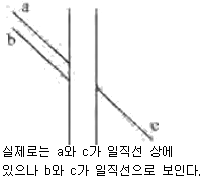
- Hering의 착시(분할착오)
- Kohler의 착시(윤곽착오)
- Poggendorf의 착시(위치착오)
- Muler-Lyer의 착시(동화착오)
(정답률: 54%)
47. 다음 기하학적 형태 주제 중 그 상징성과 의미가 부드러움, 혼합, 연결, 조화를 나타내는 것은?
- 45°/90°각의 형태
- 원 위의 원형
- 호와 접선형
- 원의 분할형
(정답률: 76%)
48. 조경식재설계 도면에서 인출선을 뽑아서 표기하는 내용이 아닌 것은?
- 수목 주수
- 수종명
- 수종 규격
- 수종 성상
(정답률: 73%)
49. 시각적 선호(visual preference)를 결정하는 변수가 아닌 것은?
- 생태적 변수
- 물리적 변수
- 상징적 변수
- 개인적 변수
(정답률: 44%)
50. 다음 중 녹시율(錄視率)에 대한 옳은 설명은?
- 특정의 조망지점에서 보여야 할 조망대상(산이나 강 등)의 실제 입면적과 보여지는 입면적의 비율을 말한다.
- 조망지점에서 바라보이는 조망대상의 부위를 말한다.
- 특정 지점의 전망에서 녹지요소의 점유율을 말하며, 보통 사진면적에서 나타나는 녹지의 면적률을 사용한다.
- 대지면적중에서 녹지면적이 차지하는 비율을 말한다.
(정답률: 57%)
51. 경관의 복잡성(Complexity)과 선호도(Preference)의 일반적인 관계는?
- 정비례 관계를 이룬다.
- 반비례 관계를 이룬다.
- 거꾸로 된 Ä자 형태(역 U자)의 관계를 이룬다.
- 불규칙적인 관계를 이룬다.
(정답률: 74%)
52. 경관조직(landscape sculpture)은 보통 구체적인 사물의 형태를 일단 추상화(abstraction)시켜 형태를 재현하는 방식을 택한다. 이 추상화 과정에 관한 설명 중 옳지 않은 것은?
- 대상의 성격 혹은 총체적인 속성을 파악한다.
- 대상의 인상(image)이 일반화되는 형태로 추출한다.
- 개체의 개성이나 속성을 구상화 과정에 의해서 추출해낸다.
- 구상적 형태를 점이나 선, 면 등으로 분해하여 추상화 된 형태로 추출한다.
(정답률: 39%)
53. 다음 중 유희시설 설계시 고려할 사항이 아닌 것은?
- 평탄지, 경사지 등의 지형특성에 맞는 이용을 고려한다.
- 편리성, 예술성보다 안전성을 더욱 고려해야 한다.
- 놀이기구는 가능한 한 다양하게 많은 기구를 배치하도록 한다.
- 이용계층(유아, 소년 등)에 맞는 놀이시설을 배치하도록 한다.
(정답률: 80%)
54. 먼셀표색계에서 색상의 기준이 되는 5가지 색이 아닌 것은?
- 적색(R)
- 녹색(G)
- 흑색(B)
- 자색(P)
(정답률: 79%)
55. 자연주의적 형(shape)의 특징과 가장 관련이적은 것은?
- 사진적
- 감정적
- 정적
- 비조형적
(정답률: 35%)
56. 디자인에 있어 형태와 공간을 구성하는 가장 기본적인 수단으로서, 공간 속의 두 점 또는 그 이상이 연결되어 이루어진 직선계획 요소이며 형태와 공간은 이것을 중심으로 규칙 또는 불규칙하게 배열될 수 있는 디자인 요소는 무엇인가?
- 축(axis)
- 연속성(sequence)
- 조망(view)
- 둘러싸기(enframement)
(정답률: 80%)
57. 주택건설기준 등에 관한 규정에서 공동주택을 건설하는 주택단지에는 그 단지면적의 얼마를 녹지로 확보하여 공해방지에 필요한 조치를 하여야 하는가? (단, 공동주택의 1층에 주민의 공동시설로 사용하는 피로티를 설치하는 경우는 제외한다.)
- 1백분의 10
- 1백분의 20
- 1백분의 30
- 1백분의 50
(정답률: 59%)
58. 단면의 표시기호 중 지반면(흙)을 나타낸 것은?
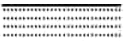
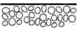
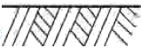
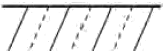
(정답률: 57%)
59. Leopold가 계곡경관의 평가에 사용한 경관가치의 상대적 척도의 계량화 방법은?
- 특이성비
- 연속성비
- 유사성비
- 상대성비
(정답률: 76%)
60. 다음 [보기]는 도시공원 및 녹지 등에 관한 법률시행규칙상의 도시공원 면적에 관한 기준이다. ( )안에 적합한 것은?
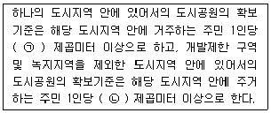
- ㉠ 3 , ㉡ 6
- ㉠ 4 , ㉡ 2
- ㉠ 6 , ㉡ 3
- ㉠ 2 , ㉡ 4
(정답률: 49%)
4과목: 조경식재
61. 집단식재기법을 적용하여 배식함으로써 수관의층화(stratification)를 형성하고자 한다. 상층수관을 적절하게 형성할 수 있는 수종으로만 짝지어진 것은?
- Abies holophylla, Zelkova serrata
- Pinus densiflora, Syringa patula var. kamibayshii
- Juniperus chinensis var. sargentii, Ailanthusaltissima
- Liriodendron tulipifera, Nerium indicum
(정답률: 60%)
62. 일반적으로 식재설계는 식물의 생리생태적인 특성을 이용하여 식재해야 하는데 다음 중 옳은 것은?
- 은방울꽃(Convallaria keiskei)은 빛이 드는 양지에 식재한다.
- 벌개미취(Aster koraiensis)는 산림의 건조한 지역에 식재한다.
- 줄(Zizania latifolia)은 냇가나 습지에 식재한다.
- 애기부들(Typha angustata)은 물이 없는 곳에식재한다.
(정답률: 72%)
63. 무성(영양)번식에 대한 설명으로 틀린 것은?
- 영양번식에 의한 식물체는 생장과 개화가 종자식물에 비해 빠르다.
- 영양번식에 의한 식물체는 종자번식에 비해 대량번식이 쉽다.
- 접목은 분리된 두 식물체의 조직을 유합시켜 하나의 식물체를 만드는 방법이다.
- 분구는 백합류, 칸나 등의 구근을 지니는 조경식물의 지하부 구근을 분주하여 번식하는 방법이다.
(정답률: 62%)
64. Pinus rigida와 Junioerus rigida에 대한 다음 설명 중 잘못된 것은?
- 공통적으로 외래종이다.
- 공통적으로 상록침엽수이다.
- 공통적으로 우리나라 산지에서 볼 수 있다.
- 종명 'igida'는 단단하다는 뜻이다.
(정답률: 59%)
65. 식재 계획시 향토자생 수종을 이용하는데 있어서 장점이 될 수 없는 것은?
- 주변지형 및 식생경관과 잘 조화된다.
- 대량구입이 용이하다.
- 지역 환경에 적응이 잘 된다.
- 유지관리에 비용이 적게 든다.
(정답률: 73%)
66. 다음 중 내풍력이 커서 방품림 조성에 가장 알맞은 수종은?
- Quercus myrsinaefolia
- Cephalotaxus koreana
- Robinia pseudoacacia
- Populus nigra var. italica
(정답률: 55%)
67. 이식수목의 지주설치 내용으로 틀린 것은?
- 매몰형 지주는 경관상 매우 중요한 곳이나 지주목이 통행에 지장을 많이 가져오는 곳에 설치한다.
- 거목이나 경관적 가치가 특히 요구되는 곳,주간 결박지점의 높이가 수고의 2/3가 되는 곳에 당김줄형을 사용한다.
- 삼발이(버팀형)는 견고한 지지를 필요로 하는 수목이나 근원직경 20cm 이하의 수목에 적용한다.
- 단각지주는 주간이 서지 못하는 묘목 또는 수고 1.2m 미만의 수목에 적용한다.
(정답률: 50%)
68. 관목을 이식할 때 멀칭을 하는 이유로 부적합한 것은?
- 토양에 습기유지
- 잡초발생 억제
- 토양결빙 방지
- 수분증발 촉진
(정답률: 85%)
69. 일본목련(Magnolia obovata)과 후박나무에 대한 다음 설명 중 잘못된 것은?
- 일본목련은 목련과(科), 후박나무는 녹나무과(科)이다.
- 일본목련은 낙엽활엽교목이고 후박나무는 상록활엽교목이다.
- 후박나무는 한국자생종이다.
- 일본목련의 한자명은 목란(木蘭)이다.
(정답률: 56%)
70. 수목을 차폐의 소재로 사용하기 위하여 평가되어야 할 사항이 아닌 것은?
- 차폐가 필요한 방향
- 차폐대상의 질감
- 관찰자의 위치 및 접근각도
- 차폐대상의 계절적 경관특성
(정답률: 62%)
71. 다음 [보기]의 ( )안에 적합한 용어는?
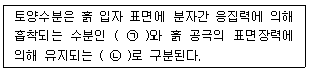
- ㉠ 결합수, ㉡ 모관수
- ㉠ 결합수, ㉡ 중력수
- ㉠ 흡습수, ㉡ 모관수
- ㉠ 흡착수, ㉡ 결합수
(정답률: 49%)
72. 거친 돌 조각물을 더욱 돋보이게 하기 위한 배경식재로 가장 적합한 것은?
- 큰 잎이 넓은 간격으로 소생하는 수종
- 작은 잎이 넓은 간격으로 소생하는 수종
- 작은 잎이 조밀하게 밀생하는 수종
- 잎의 크기나 간격과는 관계가 없다.
(정답률: 78%)
73. 수령이 오래된 노거수의 경우, 줄기가 부패하여 공동(空胴)이 생기는 경우가 많다. 다음 중 공동현상이 일어난 수목의 치유방안에 대한 설명으로 틀린 것은?
- 부패한 목질부를 끌이나 칼 등을 이용하여 먼저 깨끗이 깎아낸다.
- 동공이 큰 경우 버팀대를 박고, 충전재를 채워 넣는다.
- 공동의 충전재로는 콘크리트, 폴리우레탄, 펄라이트 등이 사용된다.
- 공사를 끝낸 후에 목질부의 부패를 방지하기 위하여, 유리섬유, 접착용 수지 등으로 이들 사이에 틈이 생기지 않도록 처리해 준다.
(정답률: 69%)
74. 정형식재의 기본 패턴에 대한 설명 중 틀린 것은?
- 단식(單植)은 건물의 측면이나 연결 부위에 사용하는 수법이다.
- 축의 좌우에 상대적으로 같은 형태의 수목 두 그루를 한 짝으로 식재하는 수법을 대식(對植)이라 한다.
- 같은 간격으로 서로 어긋나게 식재하는 수법을 교호(交互)식재라 한다.
- 정해진 땅을 완전히 피복하는 수법을 군식(群植)이라 한다.
(정답률: 52%)
75. 다음 수목 중 속생하는 잎의 수가 가장 많은 것은?
- Pinus bungeana
- Pinus thunbergii
- Pinus densiflora
- Pinus parviflora
(정답률: 64%)
76. 천이는 개시 시기의 환경조건에 의하여 천이를 구분할 수 있는데 육상의 암석지, 사지(砂地)등과 같은 무기 환경조건에서 전개되는 천이는?
- 삼차천이
- 이차천이
- 건생천이
- 습생천이
(정답률: 66%)
77. 다음 중 학교조경 설계시 식물재료의 선정조건으로 부적합한 것은?
- 잎이나 꽃이 아름다운 외국 수종
- 학생들의 교과서에 설명된 수종
- 척박한 환경에 잘 견디는 수종
- 그 학교를 상징할 수 있는 수종
(정답률: 77%)
78. 내한성이 가장 약한 수종들끼리만 짝지어진 것은?
- Albizia julibrissin, Cornus controversa
- Euonymus japonicus, Firmiana simplex
- Quercus accutissima, Symplocos chinensis
- Machilus thunbergii, Camellia japonica
(정답률: 48%)
79. 우리나라에서 낙엽성참나무류 중 천연기념물로 4곳(울진, 서울, 안동, 강릉)에 지정되어 있는 수종은?
- 신갈나무
- 상수리나무
- 떡갈나무
- 굴참나무
(정답률: 47%)
80. 다음 중 개오동나무의 과(科)명으로 적합한 것은?
- 능소화과
- 장미과
- 물푸레나무과
- 버드나무과
(정답률: 45%)
5과목: 조경시공구조학
81. Rankine의 토압이론에 의하면 그림과 같이 옹벽 뒤 배토의 지표면이 수평일 경우 토압의 작용점은 어디인가?
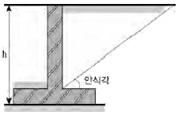
- 옹벽높이의 1/2 지점에 수평으로 작용
- 옹벽높이의 1/2 지점에 안식각과 같은 각으로 작용
- 옹벽높이의 1/3 지점에 수평으로 작용
- 옹벽높이의 1/3 지점에 안식각과 같은 각으로 작용
(정답률: 50%)
82. 슬래그를 분쇄한 것에 8∼12%의 소석회를 혼합하고 물 반죽한 후에 대기 중에서 2∼3개월 경화시키거나 고압증기 가마에 경화시켜 만든 벽돌은?
- 광재벽돌
- 날벽돌
- 오지벽돌
- 이형벽돌
(정답률: 55%)
83. 평판측량에 있어 2∼3개의 기지점으로부터 미지점의 위치를 구하려고 할 때 이용하는 방법은?
- 후방교회법
- 도해전진법
- 전방교회법
- 측방교회법
(정답률: 49%)
84. 다음 그림과 같은 도로의 수평노선에서 극선장과 접선장의 길이는 각각 얼마인가?
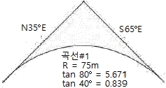
- 약 104.7m와 62.9m
- 약 104.7m와 425.3m
- 약 52.5m와 62.9m
- 약 425.3m와 104.7m
(정답률: 60%)
85. 식재시 수목의 방한(防寒)을 위한 조치가 아닌것은?
- 뿌리덮개
- 줄기싸기
- 증산촉진제 살포
- 방풍
(정답률: 79%)
86. 백색포틀랜드시멘트에 대한 설명으로 옳지 않은 것은?
- 제조시 흰색의 석회석을 사용한다.
- 안료를 섞어 착색 시멘트를 만들 수 있다.
- 보통포틀랜드시멘트에 비하여 조기강도가 매우 낮다.
- 제조시 사용하는 점토에는 산화철이 가능한한 포함되지 않도록 한다.
(정답률: 58%)
87. 일반적인 금속재료에 대한 특징 설명 중 틀린 것은?
- 연성과 전성이 작다.
- 전기, 열의 전도율이 크다.
- 금속 고유의 광택이 있으며 빛에 불투명하다.
- 일반적으로 상온에서 결정형을 가진 고체로서 가공성이 좋다.
(정답률: 73%)
88. 다음 중 단순보의 모멘트에 관한 설명으로 틀린것은?
- 모멘트의 단위는 kgㆍcm, 또는 tㆍm이다.
- 모멘트의 부호는 시계방향일 때 (＋), 시계반대방향일 때 (－)이다.
- 모멘트의 크기는 작용하는 힘의 크기에 비례하고 중심에서의 거리에 반비례한다.
- 휨모멘트가 최대인 곳에서 전단력은 0이다.
(정답률: 49%)
89. 다음 배수관거와 관련된 설명 중 옳지 않은 것은?
- 원형관이 수리학상 유리하다.
- 관거의 매설깊이는 동결심도와 상부하중을 고려한다.
- 배수관거의 유속은 1.0∼1.8m/sec가 이상적이다.
- 일반적으로 관거의 접합은 평면상으로 간선과 지선의 관 중심선에 대한 교각이 90° 일때 배수효과가 가장 좋다.
(정답률: 71%)
90. 다음 중 재료비에 대한 설명으로 틀린 것은?
- 부분품비는 직접재료비이다.
- 용접가스비는 직접재료비이다.
- 소모공구는 간접재료비이다.
- 거푸집은 간접재료비이다.
(정답률: 52%)
91. 공정표 작성시 공정계산에 관한 설명으로 옳은것은?
- 복수의 작업에 선행되는 작업의 LFT는 후속작업의 LST 중 최대값으로 한다.
- 복수의 작업에 후속되는 작업의 EST는 선행작업의 EFT 중 최소값으로 한다.
- 전체여유(TF)는 작업을 EST로 시작하고 LFT로 완료할 때 생기는 여유시간이다.
- 종속여유(DF)는 후속작업의 EST에 영향을주지 않는 범위 내에서 한 작업이 가질 수 있는 여유시간이다.
(정답률: 44%)
92. 다음 그림은 보의 단면을 도해한 것이다. 연직방향으로 하중이 작용할 때 휨에 대한 강도의 비율로 맞는 것은? (단, 강도의 비율은 단면계수( )로구한다.)
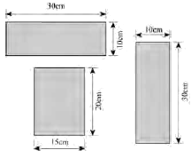
- 1 : 2 : 3
- 1 : 2 : 4
- 1 : 2 : 5
- 1 : 2 : 6
(정답률: 59%)
93. 그림과 같이 P(크기)가 같고 방향이 다른 두 힘이 점 A에서 발생하는 우력 모멘트는?
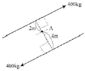
- 0.8tㆍm
- 1.6tㆍm
- 2.4tㆍm
- 3.6tㆍm
(정답률: 57%)
94. 입찰과 관련된 용어의 설명 중 틀린 것은?
- 담합이란 경쟁사들이 협의하여 적합한 낙찰자를 미리 선정할 수 있도록 하는 입찰방식이다.
- 덤핑(dumping)이란 공사의 수주를 위해 공사원가 이하로 입찰에 참여하여 저가도급을 맡는 부당행위를 말한다.
- 예정가격이란 발주자가 입찰 또는 계약체결전에 입찰 및 도급계약금액의 결정기준으로 삼기 위하여 작성한 금액을 말한다.
- 입찰보증금은 낙찰이 되어도 계약을 체결할 의지가 없는 건설업자의 입찰참가를 방지하기 위한 제도이다.
(정답률: 55%)
95. 건설공사표준품셈의 수량 계산 시 체적 및 면적구조물의 계산에서 공제할 수 있는 것은?
- 볼트의 구멍
- 이음줄눈의 간격
- 철근콘크리트 중의 철근
- 철근콘크리트의 구조용 큰 파이프
(정답률: 45%)
96. 목재의 함수율을 측정하기 위해 시험을 실시한 결과 다음과 같은 값을 얻었다. 함수율은 얼마인가?
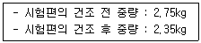
- 15%
- 17%
- 19%
- 21%
(정답률: 66%)
97. 담장시공에서 전도(轉倒)의 위험성 고려시 가장 중요한 것은?
- 설(雪)하중
- 풍(風)하중
- 수직등분포하중
- 자중(自重)
(정답률: 65%)
98. 다음과 같은 양단고정보의 단부 휨모멘트 값은?
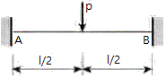
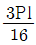
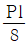
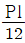
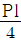
(정답률: 44%)
99. 다음 중 흙의 성질에 관한 산출식으로 틀린 것은?
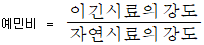
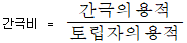
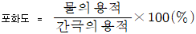
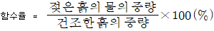
(정답률: 60%)
100. 축척 1：50,000 우리나라 지형도에서 990m의 산정과 510m의 산중턱 간에 들어가는 계곡선의 수는?
- 4개
- 5개
- 20개
- 24개
(정답률: 59%)
6과목: 조경관리론
101. 다음 농약 중 비선택성 제초제는?
- 이사－디액제(이사디아민염)
- 디캄바액제(반벨)
- 베노밀수화제(벤레이트)
- 패러쾃디클로라이드액제(그라목손)
(정답률: 60%)
102. 담자균류에 의해 발생하는 수목병은?
- 밤나무 흰가루병
- 낙엽송 가지끝마름병
- 잣나무 털녹병
- 소나무 피목가지마름병
(정답률: 65%)
103. 직접비와 간접비를 합한 총공사비가 최소가 되는 가장 경제적인 공기를 말하는 것은?
- 고정공기
- 최적공기
- 원가공기
- 한계공기
(정답률: 70%)
104. 다음 [보기]는 옥시테트라사이클린(17%)과 관련된 설명이다. ( )안에 적합한 것은?
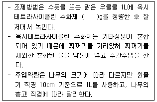
- 30
- 20
- 10
- 5
(정답률: 48%)
1⑤. 다음 목재 중 클레오소트유 주입시 내구년한은 가장 길지만 무처리재(소재)의 경우는 내구년한이 가장 작은 것은?
- 졸참나무
- 느릅나무
- 너도밤나무
- 단풍나무
(정답률: 60%)
106. 소나무재선충을 매개하는 솔수염하늘소의 월동충태는?
- 알
- 유충
- 번데기
- 성충
(정답률: 62%)
107. 다음 중 이용자관리에 있어서 이용지도의 목적이 아닌 것은?
- 공원녹지의 손상
- 공원녹지의 보전
- 안전ㆍ쾌적 이용
- 유효이용
(정답률: 71%)
108. 수목식재 후 설치하는 지주목의 장점이 아닌것은?
- 수고생장에 도움을 준다.
- 수간의 굵기가 다양하게 생육하도록 해준다.
- 지상부의 생육에 비교하여 근부의 생육을 적절하게 해준다.
- 바람의 피해를 줄일 수 있다.
(정답률: 84%)
109. 공사현장에서는 인위적이든 자연적이든 반드시 재해에 대한 관리가 이루어져야 한다. 다음 중 재해예방의 원칙과 관련된 설명이 틀린 것은?
- 재해는 원칙적으로 원인만 제거되면 예방이 가능하다.
- 재해예방을 위한 가능한 대책은 반드시 존재한다.
- 사고와 손실과의 관계는 필연적이다.
- 재해발생은 반드시 그 원인이 존재한다.
(정답률: 52%)
110. 다음 [보기]에서 설명하는 수목의 피해 현상을 보이는 해충은?
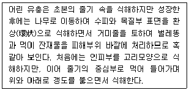
- 미국흰불나방
- 참나무재주나방
- 천막벌레나방
- 박쥐나방
(정답률: 67%)
111. 참나무 겨우살이에 대한 설명으로 옳은 것은?
- 줄기와 꽃으로만 이루어져 있다.
- 감염된 참나무 가지에서는 수지가 많이 흐른다.
- 감염을 가장 쉽게 확인할 수 있는 시기는 겨울이다.
- 가장 좋은 방제법은 살충제를 수간주입 하는것이다.
(정답률: 59%)
112. 다음 중 해충조사 방법이 아닌 것은?
- 수관부 조사
- 수간부 조사
- 축차조사
- 공간조사
(정답률: 46%)
113. 벼물바구미 성충방제를 위하여 유제를 1000배로 희석하여 10a당 140L를 살포하려고 한다. 논 전체 살포면적이 80a일 때 소요되는 약량(mL)은?
- 140
- 560
- 1120
- 2800
(정답률: 61%)
114. 다음 중 굴착작업의 안전조치사항으로 옳지 않은 것은?
- 배수구를 설치하여 굴착구간으로 표면수가 유입되는 것을 방지하고, 굴착작업부근의 표면수가 원활히 배수되도록 한다.
- 암석을 제외한 토질의 굴착시 구조물의 안정성과 작업전의 안전조치가 선행되지 않은 경우는 굴착작업을 중지시켜야 한다.
- 지층이 상이한 토질의 굴착시 지지층의 사면안식각이 그 위지층의 사면안식각보다 작아야 한다.
- 굴착구간 위로 작업원이나 자재를 운반할 필요가 있을 경우 필히 난간이 부착된 안전통로를 설치한 후 작업한다.
(정답률: 72%)
115. 아스팔트 포장의 파손부분을 사각형 수직으로 따내고 보수하는 공법으로 포장이 균열되었거나 국부적 침하, 부분적박리일 때 적용하는 공법은?
- 패칭 공법
- 표면처리 공법
- 덧씌우기 공법
- 혈매 공법
(정답률: 80%)
116. 수목의 병해에 대한 설명 중 옳지 않은 것은?
- 그을음병은 진딧물이나 깍지벌레의 배설물에 곰팡이가 기생하여 생긴다.
- 자낭균에 의한 빗자루병은 벚나무류에는 걸리지 않는다.
- 포플러 잎녹병은 5∼6월에 잎 뒷면에 여름포자가 발생하여 8월 말까지 계속 반복전염을 하면서 피해를 확대시킨다.
- 잣나무 털녹병은 병든 가지 또는 줄기의 수피는 노란색 내지갈색으로 변하면서 방추형으로 부풀고 수피가 거칠어지며 수지(resin)가 흘러 병든 부위는 지저분하게 보인다.
(정답률: 77%)
117. 공원에서 각종행사(Event)를 개최하는 의의에관한 내용이 아닌 것은?
- 공원 이용의 다양화와 활성화를 꾀할 수 있다.
- 행정 홍보의 수단으로도 이요할 수 있다.
- 시민의 교양, 문화 등의 교육의 장이 될 수 있다.
- 행사를 통하여 입장수입을 증대할 수 있다.
(정답률: 65%)
118. 다음 반응에 관여하는 세균은?
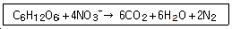
- 탈진균
- 질소고정균
- 질산화성균
- 암모니아 산화세균
(정답률: 37%)
119. 목재놀이기구의 내용 년수는 몇 년으로 보는가?
- 10년
- 20년
- 25년
- 30년
(정답률: 73%)
120. 병의 진단에 가장 확실한 증거를 보여주는 것은?
- 표징
- 병징
- 매개충
- 발생시기
(정답률: 64%)